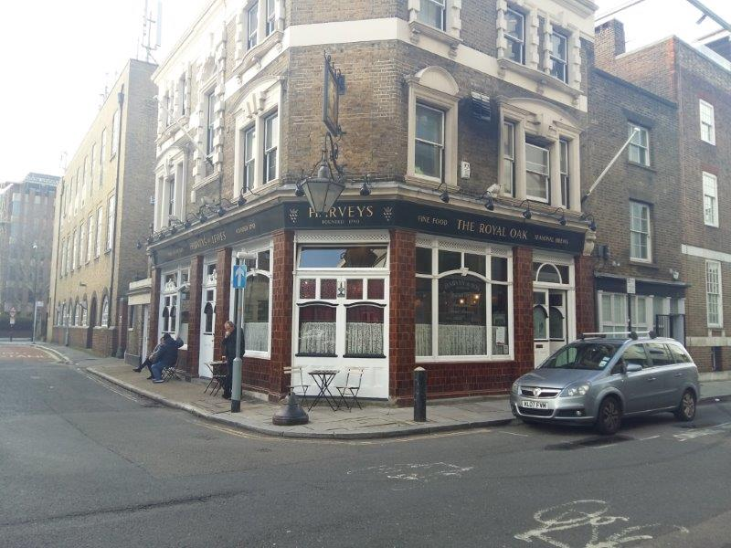

JIMMY BOOZERS' PHOTOS

×

From the outside the place doesn't look open. Dimly lit. lt must be old, Victorian era crumbling nestled into a tenement. This is very promising. The door handle clearly denotes instructions for entry. Turn handle and push door. The instructions are useful and I'm in! This place is old. Upon entry I am stunned by a blast of hot air and a vibrancy that took me by surprise. The clanging of cutlery and the whiff of roast chicken hits me hard. It is a Sunday and roasts are a plenty. In all honesty it smells great, but that's not the mindset of a dirty boozer. Or is it? Love the interior style. You can tell this place was class back in the day. I take myself back to a smoke filled haven of the London Bridge docklands. No nonsense boozing and relief from the day to day. There are no telly's though, so no sport, if that's yer hing (sic - Limmy reference). Lagers (Carling) are 4.40 but this is more of an ale sort of a vibe, the cheapest of which will set you back 3.80. The bar staff are on it. As you'd expect from a dirty boozer. There are people sharing bottles of wine. There is a wine list on a black board. WTF. Wine list. Something doesn't feel right. But then there is an old fella, with a blazer, walking behind the bar, helping himself to various ales. This fellas name is Frank. Frank is a legend. This is Frank's place. Despite Frank's tender age, Frank is observant and sees my hungover appearance and brings a pint over to me on him, out of the blue. WTF again. This is the generosity of the dirty boozer. The essence. This is love. Get chatting to Frank. The big man has owned the place for 20 years and has a fair few stories to tell. But he is selling up in 2019 and I pray the pub does not change but pretty sure such generosity will - time will tell. Summary A hidden gem and I certainly could get comfortable here. My inverted snobbery takes over though. The sophistication of the clientele appears out of place given the surroundings. It's as though they are here out of novelty more than dirty boozery. Nip in and give it a chance, then head on to the Dover Castle for the football, then head back here. Or do whatever the fuck you want.
Bevvie Value - 3/5
Football Viewing Arrangements - 0/5
Fellow Clientele - 2/5
Banter & Vibe - 4/5
44 Tabard St, London SE1 4JU, UK